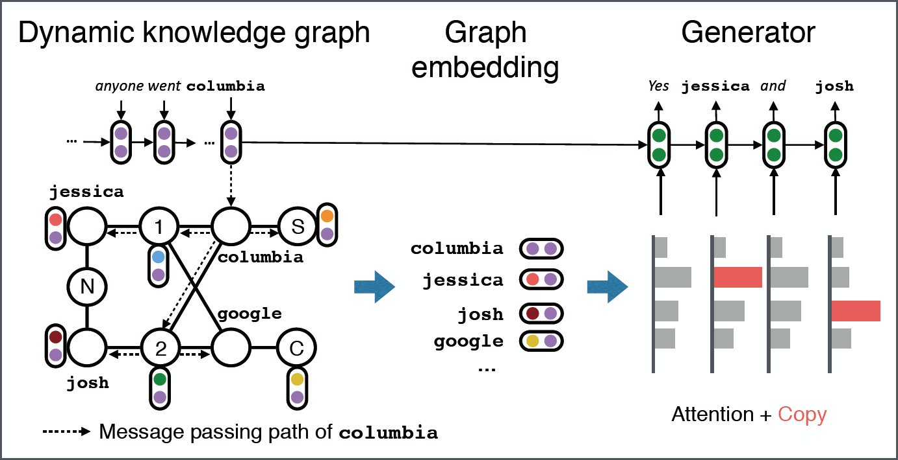
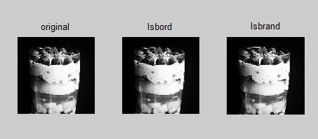

Anqi WangUndergraduate
Beijing University of Posts and Telecommunications
|
|

Biography [CV]
I am currently a junior undergraduate majoring in E-commerce Engineering with law at Beijing University of Posts and Telecommunications.
My research interests include natural language processing and deep learning, and I am currently working on NLP under the guidance of Prof. Yongfeng Huang in NGN Lab of Tsinghua University.
Current Ranking & GPA
- Overall GPA: 3.6 / 4.0 Rank: 13 / 177 Major GPA: 3.8 / 4.0
-
Performance in core courses:
Probability Theory and Mathematical Statistics (97)
Introductory Java Programming (94)
Advanced Network Programming (93)
Internet Database (92)
Project Experience
|  | (Working on it......)Automatic text generation from knowledge graphs using neural network
Joint research work with Prof. Yongfeng Huang, NGN Lab, Tsinghua University |
|  | Information hiding in text generation (steganalysis) |
| E-commerce website programming | |
Honors & Awards
| 10/2018 "Triple-A" Outstanding student" |
| 09/2018 The second prize scholarship |
| 10/2017 "Triple-A" Outstanding student" |
| 09/2017 The third prize scholarship |
© Anqi Wang | Last updated: 01/17/2019